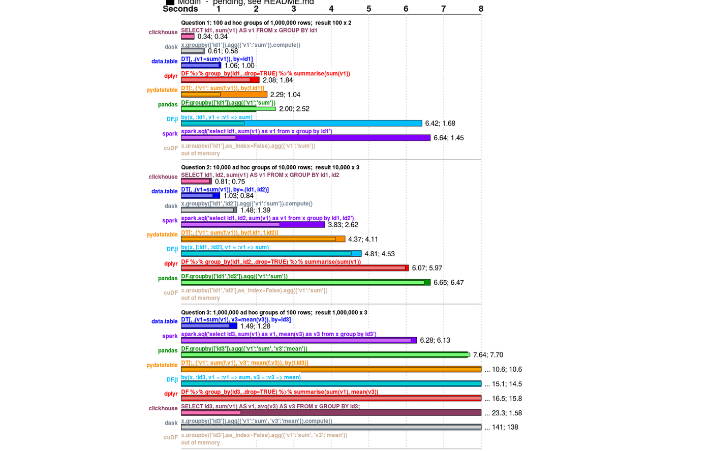

Advanced R - data.table
Ali Ehlen with additions by Tucker Lewis
September 2024
Introduction
What is data.table?
- “
data.tableis an R package that provides an enhanced version of data.frames” - “Briefly, if you are interested in reducing programming and compute time tremendously, then this package is for you.”
Why do we care?
data.tableis popular data pulled using
data pulled using
cranlogspackage
 data pulled using
data pulled using
data.tableis fast (especially on larger data)  https://h2oai.github.io/db-benchmark/
Why do we care?
data.tablecomes with other features (file i/o, reshape functions)- no need for multiple package dependencies
- syntax is clean, compact, and consistent
data.tablesare compatible with any function that takesdata.frames
data.table basics
Load data
data.table inherits from a
data.frame.
## [1] "data.frame"## [1] "data.table" "data.frame"How to use data.tables
data.table syntax
dplyrsyntax: depends on a small set of verbsdata.tablesyntax: small set of consistent rules input intodt[]- column names are variables inside
dt[]

i: “on which rows” (row filtering)
i: “on which rows” (row filtering)
- logical operations filter rows
## datetime biogas biomass coal geothermal large_hydro
## 1: 2019-09-07 17:00:00 237.5000 395.1667 5.083333 956.1667 2626.250
## 2: 2019-09-07 21:00:00 236.8333 390.3333 6.000000 964.5000 3395.917
## 3: 2019-09-07 22:00:00 236.9167 390.8333 6.000000 968.1667 3101.333
## 4: 2019-09-08 18:00:00 235.0833 369.0833 14.166667 960.5000 3981.000
## 5: 2019-09-08 19:00:00 233.5833 368.6667 14.000000 963.6667 4308.500
## 6: 2019-09-09 17:00:00 233.9167 389.4167 13.750000 974.6667 3075.417
## 7: 2019-09-09 18:00:00 230.1667 390.0833 12.833333 975.9167 4215.917
## 8: 2019-09-09 19:00:00 228.0000 388.4167 12.000000 978.5000 4413.583
## 9: 2019-09-09 20:00:00 227.8333 386.4167 12.583333 979.7500 4414.667
## 10: 2019-09-09 21:00:00 231.1667 383.1667 12.333333 980.5833 3771.417
## 11: 2019-09-09 22:00:00 231.1667 368.9167 13.083333 980.5833 3305.167
## 12: 2019-09-09 23:00:00 231.5000 358.9167 13.750000 980.3333 2704.583
## natural_gas nuclear other small_hydro solar wind
## 1: 10375.833 2257.250 0 394.5833 6680.25000 4434.000
## 2: 9712.000 2250.167 0 409.1667 0.00000 4409.583
## 3: 8878.417 2249.083 0 406.9167 0.00000 4408.667
## 4: 7189.500 2261.750 0 445.2500 1975.66667 4427.250
## 5: 7809.333 2263.417 0 470.1667 31.58333 4578.083
## 6: 8239.750 2267.083 0 446.4167 6408.91667 4426.667
## 7: 9688.667 2268.167 0 458.1667 1722.00000 4616.583
## 8: 9761.583 2269.000 0 480.6667 19.75000 4894.417
## 9: 9210.583 2267.583 0 467.1667 0.00000 4824.750
## 10: 8475.083 2265.417 0 471.7500 0.00000 4677.917
## 11: 8056.750 2265.417 0 435.6667 0.00000 4681.917
## 12: 6895.417 2266.000 0 413.1667 0.00000 4571.417i: “on which rows” (row filtering)
- logical operations filter rows
## datetime biogas biomass coal geothermal large_hydro
## 1: 2019-09-07 17:00:00 237.5000 395.1667 5.083333 956.1667 2626.250
## 2: 2019-09-07 21:00:00 236.8333 390.3333 6.000000 964.5000 3395.917
## 3: 2019-09-07 22:00:00 236.9167 390.8333 6.000000 968.1667 3101.333
## natural_gas nuclear other small_hydro solar wind
## 1: 10375.833 2257.250 0 394.5833 6680.25 4434.000
## 2: 9712.000 2250.167 0 409.1667 0.00 4409.583
## 3: 8878.417 2249.083 0 406.9167 0.00 4408.667i: “on which rows” (row filtering)
- try it! select rows for which natural gas generation is less than or equal to 5,000 MW and large hydro generation is greater than 2,000 MW
- bonus: select rows for which coal generation is greater than 10 MW and solar generation is greater than the median value of solar generation
i: “on which rows” (row filtering)
## datetime biogas biomass coal geothermal large_hydro
## 1: 2019-09-08 02:00:00 237.1667 374.3333 4.083333 969.9167 2217.667
## 2: 2019-09-08 03:00:00 237.8333 342.5000 4.000000 972.5000 2090.917
## natural_gas nuclear other small_hydro solar wind
## 1: 4530.75 2255.583 0 385.0833 0 2928.083
## 2: 4079.50 2257.500 0 377.5000 0 2726.583## datetime biogas biomass coal geothermal large_hydro
## 1: 2019-09-08 18:00:00 235.0833 369.0833 14.16667 960.5000 3981.000
## 2: 2019-09-09 07:00:00 218.5833 375.8333 13.00000 978.5833 2704.333
## 3: 2019-09-09 08:00:00 215.1667 374.5000 13.08333 975.8333 1841.333
## 4: 2019-09-09 09:00:00 214.5000 378.3333 13.00000 970.8333 1289.500
## 5: 2019-09-09 10:00:00 217.7500 381.5000 13.25000 967.3333 1631.250
## 6: 2019-09-09 11:00:00 217.4167 376.9167 12.66667 965.2500 1633.583
## 7: 2019-09-09 12:00:00 224.8333 379.5000 10.83333 965.0833 1679.000
## 8: 2019-09-09 13:00:00 231.0833 383.1667 11.50000 964.2500 1790.500
## 9: 2019-09-09 14:00:00 230.9167 383.5000 12.16667 968.8333 1851.667
## 10: 2019-09-09 15:00:00 231.3333 383.4167 11.91667 969.0000 2081.833
## 11: 2019-09-09 16:00:00 233.8333 389.0000 13.16667 970.7500 2340.917
## 12: 2019-09-09 17:00:00 233.9167 389.4167 13.75000 974.6667 3075.417
## 13: 2019-09-09 18:00:00 230.1667 390.0833 12.83333 975.9167 4215.917
## natural_gas nuclear other small_hydro solar wind
## 1: 7189.500 2261.750 0 445.2500 1975.667 4427.250
## 2: 6226.417 2265.583 0 389.8333 2518.333 2910.750
## 3: 5214.250 2266.333 0 360.7500 7190.083 2882.083
## 4: 4615.167 2265.417 0 380.2500 9542.917 2948.000
## 5: 4147.250 2263.583 0 405.0833 10451.333 2666.417
## 6: 4174.167 2264.417 0 406.6667 10780.500 2308.833
## 7: 4239.667 2264.667 0 408.3333 10760.917 1942.750
## 8: 4693.667 2265.583 0 409.0833 10629.333 2760.000
## 9: 4919.750 2265.417 0 406.0833 10655.167 3554.750
## 10: 5748.917 2266.583 0 438.5833 10067.250 3882.667
## 11: 7001.917 2266.583 0 446.3333 9051.583 4076.917
## 12: 8239.750 2267.083 0 446.4167 6408.917 4426.667
## 13: 9688.667 2268.167 0 458.1667 1722.000 4616.583j: “what to do” (column operations)
j: “what to do” (column operations)
- perform any operation in
j
## [1] 2670.1667 2778.8333 2795.2500 2582.5833 2397.4167 2327.0000
## [7] 2126.0000 4249.8333 8343.7500 10104.5833 10781.7500 11175.4167
## [13] 10895.1667 10635.0000 10480.1667 10241.2500 9942.6667 8699.4167
## [19] 5307.5000 3776.0000 3408.4167 3097.4167 3059.3333 2893.5000
## [25] 2523.5833 2415.9167 2206.0833 1649.6667 991.5000 714.9167
## [31] 578.5833 2986.0833 7418.0000 9533.1667 10372.3333 10615.9167
## [37] 10469.1667 10261.6667 10352.5833 9811.7500 8002.6667 5165.4167
## [43] 2507.4167 1695.5000 1832.7500 2062.9167 1996.0833 1735.4167
## [49] 1622.5000 1723.5000 1849.0833 1552.1667 1425.1667 1363.3333
## [55] 1326.6667 2620.3333 5961.3333 8104.1667 8849.3333 9843.5833
## [61] 9907.4167 9185.5833 9527.7500 9888.7500 9072.5833 6852.8333
## [67] 3443.2500 2118.6667 2189.3333 2078.9167 2027.2500 1928.6667
## [73] 2227.0833 2092.5833 1837.6667 1886.5833 1822.4167 1663.6667
## [79] 1527.5833 3717.2500 8016.8333 10204.8333 10926.2500 11134.8333
## [85] 11271.8333 11483.9167 11843.9167 12003.3333 11428.9167 8994.5000
## [91] 5060.3333 3684.5000 4054.5833 4049.4167 4154.1667 4107.7500
## [97] 4078.8333 3859.2500 3878.7500 3809.9167 3812.6667 3672.5000
## [103] 3711.5833 6138.2500 10841.7500 12954.9167 13769.2500 14285.5833
## [109] 14550.0833 14712.9167 14774.4167 14117.0000 13483.0833 11114.2500
## [115] 6067.6667 3600.3333 4045.8333 4409.5833 4408.6667 4294.0833
## [121] 3628.0833 3118.0833 2928.0833 2726.5833 2677.9167 2772.1667
## [127] 2887.3333 6014.0833 10932.0000 13178.7500 14233.3333 14432.0000
## [133] 14629.0000 14842.8333 14834.3333 14302.6667 13498.8333 11223.0833
## [139] 6402.9167 4609.6667 4364.6667 4007.0833 4198.9167 4175.6667
## [145] 4023.4167 4062.1667 4153.3333 3959.5833 3683.6667 3523.8333
## [151] 3275.3333 5429.0833 10072.1667 12490.9167 13117.7500 13089.3333
## [157] 12703.6667 13389.3333 14209.9167 13949.9167 13128.5000 10835.5833
## [163] 6338.5833 4914.1667 4824.7500 4677.9167 4681.9167 4571.4167j: “what to do” (column operations)
- perform any operation in
j
## [1] 8010.500 8336.500 8385.750 7747.750 7192.250 6981.000
## [7] 15281.104 299488.556 834963.403 1067313.865 1152190.219 1224516.809
## [13] 1208937.063 1167009.750 1144680.503 1057525.139 940937.062 720226.851
## [19] 253363.437 36299.972 20083.757 9292.250 9178.000 8680.500
## [25] 7570.750 7247.750 6618.250 4949.000 2974.500 2144.750
## [31] 11623.257 301048.875 818965.771 1070041.833 1162682.375 1186467.375
## [37] 1158653.917 1130800.819 1101875.361 1012419.097 774473.892 459216.771
## [43] 130539.844 8291.333 5498.250 6188.750 5988.250 5206.250
## [49] 4867.500 5170.500 5547.250 4656.500 4275.500 4090.000
## [55] 7679.552 174050.236 542303.764 778465.625 896767.083 1025437.618
## [61] 1039308.708 962964.028 1006242.375 1047985.944 923123.903 622641.361
## [67] 205340.479 9971.083 6568.000 6236.750 6081.750 5786.000
## [73] 6681.250 6277.750 5513.000 5659.750 5467.250 4991.000
## [79] 12171.083 288830.812 821286.694 1074298.962 1169842.569 1208043.875
## [85] 1196018.538 1192192.736 1167777.531 1148957.292 1033514.406 730203.069
## [91] 240335.312 15614.528 12163.750 12148.250 12462.500 12323.250
## [97] 12236.500 11577.750 11636.250 11429.750 11438.000 11017.500
## [103] 19031.681 329184.885 898422.906 1160500.597 1243934.573 1269358.573
## [109] 1263524.375 1258327.448 1259339.399 1225493.201 1124938.833 806581.688
## [115] 243456.469 14963.181 12137.500 13228.750 13226.000 12882.250
## [121] 10884.250 9354.250 8784.250 8179.750 8033.750 8316.500
## [127] 19276.000 342521.979 870872.969 1129279.528 1252038.667 1270701.833
## [133] 1281800.875 1295271.087 1289723.847 1240913.569 1120508.222 821549.778
## [139] 245504.903 17422.920 13094.000 12021.250 12596.750 12527.000
## [145] 12070.250 12186.500 12460.000 11878.750 11051.000 10571.500
## [151] 16690.240 283965.097 782179.382 1032321.813 1145888.167 1178856.688
## [157] 1215534.632 1236410.889 1240892.035 1176093.250 1070511.701 762856.212
## [163] 212023.250 16934.750 14474.250 14033.750 14045.750 13714.250j: “what to do” (column operations)
- new columns may be assigned in
jor a new table can be created
generation_dt[,newcol := 3*wind + solar*biogas/2]
generation_dt[,.(newcol = 3*wind + solar*biogas/2)]## newcol
## 1: 8010.50
## 2: 8336.50
## 3: 8385.75
## 4: 7747.75
## 5: 7192.25
## ---
## 164: 16934.75
## 165: 14474.25
## 166: 14033.75
## 167: 14045.75
## 168: 13714.25j: “what to do” (column operations)
- columns may be deleted in
j
j: “what to do” (column operations)
- try it! add a column called “total_hydro” that is
the sum of the
small_hydroandlarge_hydrocolumns - try it! find the mean of the
nuclearandbiogascolumns - bonus: create a new table: for the hours when solar
generation is zero, get the
datetimeandtotal_thermal(sum of natural gas and coal generation)
j: “what to do” (column operations)
generation_dt[,total_hydro := small_hydro + large_hydro]
# generation_dt[,mean(nuclear)]
# generation_dt[,mean(biogas)]
# or
generation_dt[,.(mean(nuclear), mean(biogas))]## V1 V2
## 1: 2253.677 234.6855# or, with column names
# generation_dt[,.(mean_nuc = mean(nuclear), mean_biogas = mean(biogas))]
generation_dt[solar == 0, .(datetime, total_thermal = natural_gas + coal)]## datetime total_thermal
## 1: 2019-09-03 00:00:00 9719.833
## 2: 2019-09-03 01:00:00 9164.000
## 3: 2019-09-03 02:00:00 8087.333
## 4: 2019-09-03 03:00:00 7811.083
## 5: 2019-09-03 04:00:00 7753.750
## 6: 2019-09-03 05:00:00 8634.583
## 7: 2019-09-03 21:00:00 16464.917
## 8: 2019-09-03 22:00:00 14814.333
## 9: 2019-09-03 23:00:00 12597.417
## 10: 2019-09-04 00:00:00 10715.333
## 11: 2019-09-04 01:00:00 9714.750
## 12: 2019-09-04 02:00:00 9464.667
## 13: 2019-09-04 03:00:00 9293.583
## 14: 2019-09-04 04:00:00 9670.417
## 15: 2019-09-04 05:00:00 10579.500
## 16: 2019-09-04 20:00:00 21270.917
## 17: 2019-09-04 21:00:00 18865.083
## 18: 2019-09-04 22:00:00 16497.833
## 19: 2019-09-04 23:00:00 14906.833
## 20: 2019-09-05 00:00:00 13842.833
## 21: 2019-09-05 01:00:00 12685.167
## 22: 2019-09-05 02:00:00 11825.583
## 23: 2019-09-05 03:00:00 11482.667
## 24: 2019-09-05 04:00:00 11611.250
## 25: 2019-09-05 05:00:00 12050.667
## 26: 2019-09-05 20:00:00 19771.667
## 27: 2019-09-05 21:00:00 17745.750
## 28: 2019-09-05 22:00:00 16040.000
## 29: 2019-09-05 23:00:00 13673.583
## 30: 2019-09-06 00:00:00 11800.250
## 31: 2019-09-06 01:00:00 10891.583
## 32: 2019-09-06 02:00:00 10426.833
## 33: 2019-09-06 03:00:00 9857.417
## 34: 2019-09-06 04:00:00 9825.583
## 35: 2019-09-06 05:00:00 10215.583
## 36: 2019-09-06 20:00:00 16236.000
## 37: 2019-09-06 21:00:00 14701.583
## 38: 2019-09-06 22:00:00 13441.000
## 39: 2019-09-06 23:00:00 11082.333
## 40: 2019-09-07 00:00:00 9504.833
## 41: 2019-09-07 01:00:00 8625.500
## 42: 2019-09-07 02:00:00 7402.583
## 43: 2019-09-07 03:00:00 6676.583
## 44: 2019-09-07 04:00:00 6518.167
## 45: 2019-09-07 05:00:00 6547.083
## 46: 2019-09-07 20:00:00 10502.000
## 47: 2019-09-07 21:00:00 9718.000
## 48: 2019-09-07 22:00:00 8884.417
## 49: 2019-09-07 23:00:00 8062.917
## 50: 2019-09-08 00:00:00 6369.750
## 51: 2019-09-08 01:00:00 5042.667
## 52: 2019-09-08 02:00:00 4534.833
## 53: 2019-09-08 03:00:00 4083.500
## 54: 2019-09-08 04:00:00 3846.250
## 55: 2019-09-08 05:00:00 3931.000
## 56: 2019-09-08 20:00:00 7844.917
## 57: 2019-09-08 21:00:00 7701.583
## 58: 2019-09-08 22:00:00 6840.917
## 59: 2019-09-08 23:00:00 6039.417
## 60: 2019-09-09 00:00:00 5538.333
## 61: 2019-09-09 01:00:00 5246.417
## 62: 2019-09-09 02:00:00 5101.667
## 63: 2019-09-09 03:00:00 5389.167
## 64: 2019-09-09 04:00:00 5557.333
## 65: 2019-09-09 05:00:00 5805.083
## 66: 2019-09-09 20:00:00 9223.167
## 67: 2019-09-09 21:00:00 8487.417
## 68: 2019-09-09 22:00:00 8069.833
## 69: 2019-09-09 23:00:00 6909.167
## datetime total_thermalby: “grouped by what”
by: “grouped by what”
- add grouping to any operation
## mday V1
## 1: 3 2246.920
## 2: 4 2246.087
## 3: 5 2253.396
## 4: 6 2252.580
## 5: 7 2254.882
## 6: 8 2257.490
## 7: 9 2264.385by: “grouped by what”
- combine with everything we’ve learned about
iandj
## mday mean_nuc mean_wind
## 1: 3 2246.920 2095.382
## 2: 4 2246.087 1190.125
## 3: 5 2253.396 1504.118
## 4: 6 2252.580 2225.656
## 5: 7 2254.882 3907.955
## 6: 8 2257.490 3696.674
## 7: 9 2264.385 3718.628by: “grouped by what”
- combine with everything we’ve learned about
iandj
generation_dt[hour(datetime) > 19,
.(mean_nuc = mean(nuclear), mean_wind = mean(wind)),
by = mday(datetime)]## mday mean_nuc mean_wind
## 1: 3 2247.146 3093.312
## 2: 4 2249.604 1906.792
## 3: 5 2257.021 2056.042
## 4: 6 2255.146 4091.479
## 5: 7 2250.583 4289.542
## 6: 8 2259.500 4186.583
## 7: 9 2266.104 4689.000by: “grouped by what”
- try it! find the median solar generation by hour.
- try it! for hours when the solar generation is greater than zero, find the maximum natural gas generation by day
by: “grouped by what”
## hour V1
## 1: 0 0.00000
## 2: 1 0.00000
## 3: 2 0.00000
## 4: 3 0.00000
## 5: 4 0.00000
## 6: 5 0.00000
## 7: 6 67.83333
## 8: 7 2518.33333
## 9: 8 7055.75000
## 10: 9 9271.00000
## 11: 10 10088.25000
## 12: 11 10474.08333
## 13: 12 10284.16667
## 14: 13 10063.66667
## 15: 14 9899.41667
## 16: 15 9688.33333
## 17: 16 8736.41667
## 18: 17 6269.41667
## 19: 18 1939.75000
## 20: 19 31.58333
## 21: 20 0.00000
## 22: 21 0.00000
## 23: 22 0.00000
## 24: 23 0.00000
## hour V1## mday V1
## 1: 3 20725.667
## 2: 4 23359.583
## 3: 5 22071.667
## 4: 6 18611.000
## 5: 7 11380.083
## 6: 8 7809.333
## 7: 9 9761.583data.table syntax recap
- column names are variables inside
dt[]
- the combination of
i,j, andbyis very powerful - few other components; outside scope of this review
data.table upgrades to other functions
data.table upgrades to other functions
data.table co-opts some functions we’ve already talked
about
meltdcastmergeorder- This means we can repeat what we did with dplyr almost exactly
dplyr -> data.table
try it! Convert this dplyr syntax into
data.table syntax (remember that this created the columns
day, log_output, and
per_output)
dplyr -> data.table
long_ca_energy <- long_ca_energy %>%
mutate(day = as_date(datetime),
log_output = log(output)) %>%
group_by(day) %>%
mutate(total_daily_output = sum(output, na.rm = T)) %>%
ungroup() %>%
mutate(per_output = output/total_daily_output)
# becomes
all_generation_long[,day := as_date(datetime)]
all_generation_long[,log_output := log(value)]
all_generation_long[,per_output := value/sum(value), by = day]dplyr -> data.table
long_ca_energy <- long_ca_energy %>%
mutate(day = as_date(datetime),
log_output = log(output)) %>%
group_by(day) %>%
mutate(total_daily_output = sum(output, na.rm = T)) %>%
ungroup() %>%
mutate(per_output = output/total_daily_output)
# becomes
all_generation_long[,day := as_date(datetime)]
all_generation_long[,log_output := log(value)]
all_generation_long[,per_output := value/sum(value), by = day]It is also possible to do this in one command:
A few bonus features
fread and fwrite
- “Fast and friendly file finagler” - help file
- “Similar to read.table but faster and more convenient” - help file
stringsAsFactors=FALSEalready set
fread benchmarks
# example, no need to run this
library(rbenchmark)
# this will run each command 100 times and report the average time taken
# 168 lines
data_file <- "generation.csv"
benchmark(read.csv(data_file, stringsAsFactors = F),
fread(data_file),
replications = 500)
# test replications elapsed relative user.self sys.self user.child sys.child
# 2 fread(data_file) 500 0.62 1.000 0.50 0.12 NA NA
# 1 read.csv(data_file, stringsAsFactors = F) 500 0.67 1.081 0.54 0.13 NA NA
# 12,600 lines
data_file_medium <- "generation_medium.csv"
benchmark(read.csv(data_file_medium, stringsAsFactors = F),
fread(data_file_medium))
# test replications elapsed relative user.self sys.self user.child sys.child
# 2 fread(data_file_medium) 100 0.77 1.000 0.72 0.05 NA NA
# 1 read.csv(data_file_medium, stringsAsFactors = F) 100 4.28 5.558 4.22 0.06 NA NA
# 1,008,000 lines
data_file_large <- "generation_large.csv"
benchmark(read.csv(data_file_large, stringsAsFactors = F),
fread(data_file_large),
replications = 20)
# test replications elapsed relative user.self sys.self user.child sys.child
# 2 fread(data_file_large) 20 2.67 1.000 7.07 1.10 NA NA
# 1 read.csv(data_file_large, stringsAsFactors = F) 20 74.59 27.936 71.53 3.05 NA NAset functions
setfunctions update properties of thedata.tableby reference
Special variables
data.tables also contain some special read-only symbols
that are often useful:
.N: number of rows in the current group.I: a vector,1:nrow(dt), usually used for more advanced operations
Other features: keys
- keys: one or more columns, pre-sorted index of the table.
Other features: joins
- joins:
data.tablehas a special join syntax
## datetime imports
## 1: 2019-09-03 00:00:00 7527.333
## 2: 2019-09-03 01:00:00 6930.333
## 3: 2019-09-03 02:00:00 7005.833
## 4: 2019-09-03 03:00:00 7080.583
## 5: 2019-09-03 04:00:00 7421.667
## ---
## 164: 2019-09-09 19:00:00 10002.667
## 165: 2019-09-09 20:00:00 9994.083
## 166: 2019-09-09 21:00:00 9690.167
## 167: 2019-09-09 22:00:00 7998.000
## 168: 2019-09-09 23:00:00 7570.750Other features: joins
- joins:
data.tablehas a special join syntax
## datetime imports biogas biomass coal geothermal
## 1: 2019-09-03 00:00:00 7527.333 238.9167 407.0833 9.000000 967.2500
## 2: 2019-09-03 01:00:00 6930.333 239.0000 406.5000 9.000000 970.3333
## 3: 2019-09-03 02:00:00 7005.833 239.0000 406.8333 9.000000 973.1667
## 4: 2019-09-03 03:00:00 7080.583 238.9167 407.1667 9.833333 973.8333
## 5: 2019-09-03 04:00:00 7421.667 237.9167 406.0833 9.416667 974.6667
## ---
## 164: 2019-09-09 19:00:00 10002.667 228.0000 388.4167 12.000000 978.5000
## 165: 2019-09-09 20:00:00 9994.083 227.8333 386.4167 12.583333 979.7500
## 166: 2019-09-09 21:00:00 9690.167 231.1667 383.1667 12.333333 980.5833
## 167: 2019-09-09 22:00:00 7998.000 231.1667 368.9167 13.083333 980.5833
## 168: 2019-09-09 23:00:00 7570.750 231.5000 358.9167 13.750000 980.3333
## large_hydro natural_gas nuclear other small_hydro solar wind
## 1: 3152.500 9710.833 2248.750 0 401.6667 0.00 2670.167
## 2: 2724.333 9155.000 2250.583 0 400.9167 0.00 2778.833
## 3: 2630.000 8078.333 2250.833 0 413.5833 0.00 2795.250
## 4: 2611.250 7801.250 2245.000 0 359.9167 0.00 2582.583
## 5: 2651.333 7744.333 2242.833 0 382.0833 0.00 2397.417
## ---
## 164: 4413.583 9761.583 2269.000 0 480.6667 19.75 4894.417
## 165: 4414.667 9210.583 2267.583 0 467.1667 0.00 4824.750
## 166: 3771.417 8475.083 2265.417 0 471.7500 0.00 4677.917
## 167: 3305.167 8056.750 2265.417 0 435.6667 0.00 4681.917
## 168: 2704.583 6895.417 2266.000 0 413.1667 0.00 4571.417
## total_hydro
## 1: 3554.167
## 2: 3125.250
## 3: 3043.583
## 4: 2971.167
## 5: 3033.417
## ---
## 164: 4894.250
## 165: 4881.833
## 166: 4243.167
## 167: 3740.833
## 168: 3117.750Other features: joins
- joins:
data.tablehas a special join syntax
# operations can be performed in the same step as the merge
imports_dt[generation_dt, on = "datetime", imports_gas := imports + i.natural_gas]
imports_dt## datetime imports imports_gas
## 1: 2019-09-03 00:00:00 7527.333 17238.17
## 2: 2019-09-03 01:00:00 6930.333 16085.33
## 3: 2019-09-03 02:00:00 7005.833 15084.17
## 4: 2019-09-03 03:00:00 7080.583 14881.83
## 5: 2019-09-03 04:00:00 7421.667 15166.00
## ---
## 164: 2019-09-09 19:00:00 10002.667 19764.25
## 165: 2019-09-09 20:00:00 9994.083 19204.67
## 166: 2019-09-09 21:00:00 9690.167 18165.25
## 167: 2019-09-09 22:00:00 7998.000 16054.75
## 168: 2019-09-09 23:00:00 7570.750 14466.17Other features: joins
- joins:
data.tablehas a special join syntax
# operations can be performed in the same step as the merge
imports_dt[generation_dt[hour(datetime) == 2], on = "datetime", imports_gas_2 := imports + i.natural_gas]
imports_dt## datetime imports imports_gas imports_gas_2
## 1: 2019-09-03 00:00:00 7527.333 17238.17 NA
## 2: 2019-09-03 01:00:00 6930.333 16085.33 NA
## 3: 2019-09-03 02:00:00 7005.833 15084.17 15084.17
## 4: 2019-09-03 03:00:00 7080.583 14881.83 NA
## 5: 2019-09-03 04:00:00 7421.667 15166.00 NA
## ---
## 164: 2019-09-09 19:00:00 10002.667 19764.25 NA
## 165: 2019-09-09 20:00:00 9994.083 19204.67 NA
## 166: 2019-09-09 21:00:00 9690.167 18165.25 NA
## 167: 2019-09-09 22:00:00 7998.000 16054.75 NA
## 168: 2019-09-09 23:00:00 7570.750 14466.17 NALibrary Management
Library Management
- dplyr, data.table, and reshape2 not only share similar functions, but sometimes share function names
- in these cases, the package loaded most recently will be the function used
- this is important for many reasons, but especially when working between data.frame and data.table
- let’s look at the function ‘melt’
Library Management
- let’s look at the function ‘melt’
- we know that melt is a data.table function
- we’ve been working a lot with data.tables
- what package do we expect melt to be loading from?
Library Management
- what package do we expect melt to be loading from?
## function (data, ..., na.rm = FALSE, value.name = "value")
## {
## UseMethod("melt", data)
## }
## <bytecode: 0x7fb9a0df6f08>
## <environment: namespace:reshape2>Library Management
- and if we use this function, what object do we receive?
cat('is.data.table: ', is.data.table(melt(imports_dt, 0)),
'\nis.data.frame: ', is.data.frame(melt(imports_dt, 0)))## is.data.table: FALSE
## is.data.frame: TRUELibrary Management
- how to specify functions
- explicit function name
- the function is still there, but given a verbose reference
is.data.table(
melt.data.table(imports_dt,
id.vars = "datetime",
variable.name = "source",
value.name = "output"))## [1] TRUELibrary Management
- how to specify functions
- reference intended library
is.data.table(
data.table::melt(imports_dt,
id.vars = "datetime",
variable.name = "source",
value.name = "output"))## [1] TRUELibrary Management
- how to specify functions
- set function reference
melt <- data.table::melt
is.data.table(
melt(imports_dt,
id.vars = "datetime",
variable.name = "source",
value.name = "output"))## [1] TRUELibrary Management
- how to specify functions
- reload libraries in desired order
Library Management
-lastly, a function to review all overwritten functions
conflicted <- base::conflicts()
which_packages_by_function <- lapply(conflicted, utils::find)
names(which_packages_by_function) <- conflicted
which_packages_by_function[0:5]## $melt
## [1] ".GlobalEnv" "package:data.table" "package:reshape2"
##
## $dcast
## [1] "package:data.table" "package:reshape2"
##
## $melt
## [1] ".GlobalEnv" "package:data.table" "package:reshape2"
##
## $`body<-`
## [1] "package:methods" "package:base"
##
## $kronecker
## [1] "package:methods" "package:base"Final thoughts
Final thoughts
- developers: Matt Dowle, Arun Srinivasan (look out for them on stack overflow)
- useful introduction
to
data.table - also useful
data.tableFAQ - Intro
to advanced features of
data.tablemeltanddcastfunctions - or any other vignette